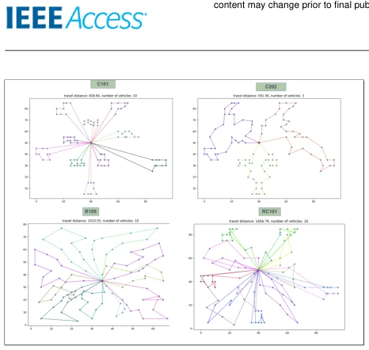
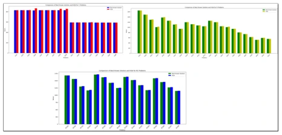

This paper is essentially "rehashing old material" in the field of operations research, although the title bears "logistics optimization", it has almost nothing to do with Embodied AI robot control, perception, or decision-making. The authors used a classic Hybrid Genetic Algorithm (HGA) to solve the Vehicle Routing Problem (VRPTW), which counts as a "classic 'old reliable'" in the optimization field. The highlight is indeed obtaining the Best Known Solutions (BKS) for 11 instances in the Solomon benchmark test, even improving one. But the drawbacks are also obvious: the experiment ran on an Intel Pentium IV 1.6 MHz processor; is this configuration a time travel back to 2000? Mentioning this in a 2023 paper, is it paying tribute to classics or insufficient hardware budget? Furthermore, although the Solomon heuristic is classic, as a means for initial population generation, it appears somewhat "retro" in today's era where deep learning is prevalent. However, for pure logistics scheduling scenarios, this method is indeed robust, just don't expect it to directly enable robots to learn to walk.
VRPTW is an NP-hard problem; as customer points increase, the search space explodes factorially, making exact algorithms difficult to solve within a reasonable time [3]. Existing metaheuristic algorithms such as Genetic Algorithm (GA) [15], Particle Swarm Optimization (PSO) [51], etc., although capable of handling constraints, often get trapped in local optima or have slow convergence speeds. Although the HGA-ADM proposed in literature [45] is effective, there is still room for improvement. Especially for scenarios with strict time window constraints, simple random initialization leads to insufficient population diversity, making it difficult to quickly converge to high-quality solutions [87]. Therefore, it is necessary to combine constructive heuristics (such as Solomon Insertion) to enhance initial solution quality, while utilizing the global search capability of metaheuristics to balance exploration and exploitation, solving the problems of unstable solution quality or low computational efficiency of existing methods under large-scale instances [75].
The overall process is the HGA-SIH framework. First, chromosomes adopt integer encoding to represent the sequence of demand points [84]. The core innovation lies in initial population generation: combining random generation with Solomon Insertion Heuristic (SIH), the former ensures diversity, the latter provides high-quality feasible solutions [85]. Next, chromosomes are converted into vehicle sub-paths, which must satisfy capacity and time window constraints [89]. The fitness function is designed as the total completion time plus a penalty term for time window violations, with a weight of λ. Regarding evolutionary operators, selection adopts Roulette Wheel + Elite Retention strategy; crossover uses Partial Mapped Crossover (PMX) [88]; mutation adopts Inversion Mutation [89] to maintain sequence structure. Parameter tuning adopts Taguchi orthogonal experimental design, rather than brute-force search, to efficiently determine hyperparameters such as population size and crossover rate [90].
The Solomon benchmark dataset is used, containing 56 instances (100 customers), divided into R, C, and RC three categories. Evaluation metrics include total distance, number of vehicles, and number of time window violations. Results show that HGA-SIH reaches BKS on 11 instances, and is better than BKS on 1 instance. Compared with methods in literature [15], [45], etc., it performs comparably or better in solution quality and computational efficiency. Ablation experiments are not explicitly shown, but the effectiveness of the Taguchi method is verified by comparing different parameter settings (Table 2). It is worth noting that the experimental environment configuration is low (Pentium IV); although this proves the algorithm's lightweight nature, it also limits the persuasiveness for large-scale real-time applications.

FIGURE 5. Schematic representation of optimal solutions for four distinct vehicle routing problems

FIGURE 6. Best known VS Our HGA-SIH results for R, C and RC Category problems